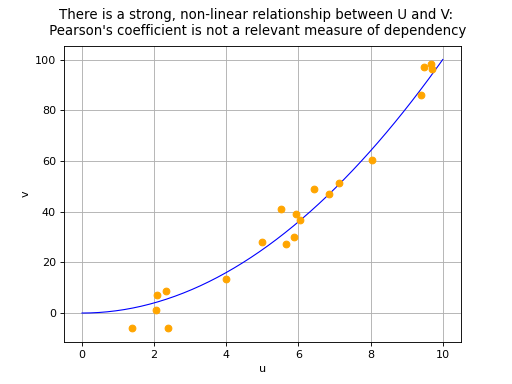
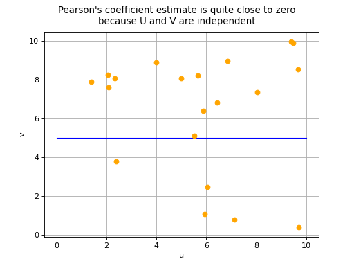
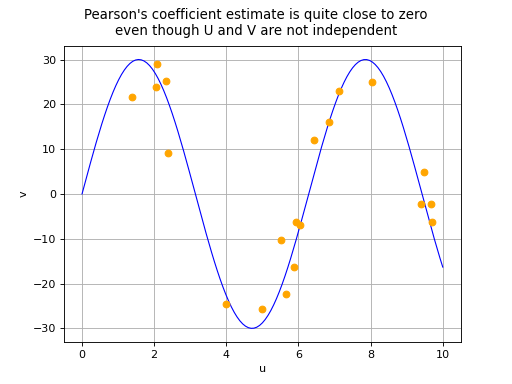

Pearson correlation coefficient¶
Pearson’s correlation coefficient  aims to measure
the strength of a linear relationship between two random variables
aims to measure
the strength of a linear relationship between two random variables
 and
and  . It is defined as follows:
. It is defined as follows:
![\begin{aligned}
\rho_{U,V} = \frac{\displaystyle \Cov{U,V}}{\sigma_U \sigma_V}
\end{aligned}]()
where
![\Cov{U,V} = \Expect{ \left( U - m_U \right) \left( V - m_V \right) }]() ,
,
 ,
,  ,
,
 and
and  .
If we have a sample made up of a set of
.
If we have a sample made up of a set of  pairs
pairs
![\left\{ (u_1,v_1),(u_2,v_2),\ldots,(u_N,v_N) \right\}]() , Pearson’s
correlation coefficient can be estimated using the formula:
, Pearson’s
correlation coefficient can be estimated using the formula:
![\begin{aligned}
\widehat{\rho}_{U,V} = \frac{ \displaystyle \sum_{i=1}^N \left( u_i - \overline{u} \right) \left( v_i - \overline{v} \right) }{ \sqrt{\displaystyle \sum_{i=1}^N \left( u_i - \overline{u} \right)^2 \left( v_i - \overline{v} \right)^2} }
\end{aligned}]()
where  and
and  represent the
empirical means of the samples
represent the
empirical means of the samples  and
and
 .
.
Pearson’s correlation coefficient takes values between -1 and 1. The
closer its absolute value is to 1, the stronger the indication is that a
linear relationship exists between variables and .
The sign of Pearson’s coefficient indicates if the two variables
increase or decrease in the same direction (positive coefficient) or in
opposite directions (negative coefficient). We note that a correlation
coefficient equal to 0 does not necessarily imply the independence of
variables and : this property is in fact
theoretically guaranteed only if and both follow a
Normal distribution. In all other cases, there are two possible
situations in the event of a zero Pearson’s correlation coefficient:
the variables
and are in fact independent,or a non-linear relationship exists between
and .
(Source code, png)
{kind=link}

(Source code, png)
{kind=link}

(Source code, png)
{kind=link}

(Source code, png)
{kind=link}

The estimate  of Pearson’s correlation
coefficient is sometimes denoted by
of Pearson’s correlation
coefficient is sometimes denoted by  .
.